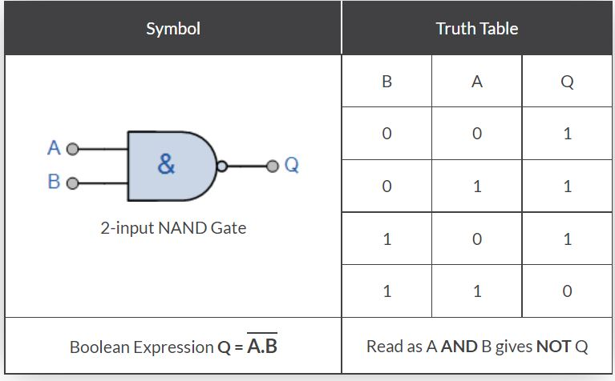
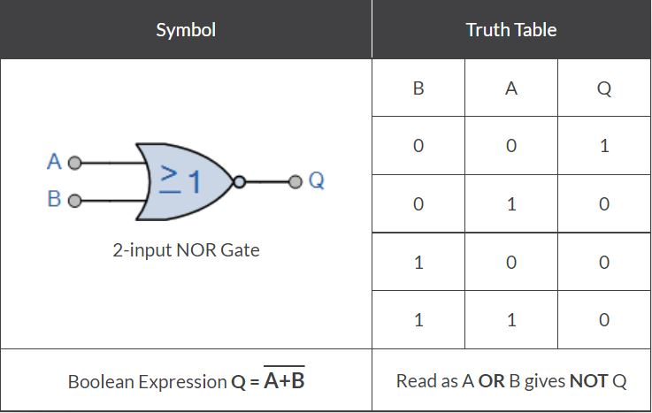

Theory
Universal gates are those logic gates using which we can implement any Boolean function without using any other type of logic gates. NOR gate and NAND gate are universal gates i.e. we can implement any Boolean expression using only NAND gates or only NOR gates.
NAND gate is equivalent to an AND gate followed by a NOT gate.The output of a NAND gate is low if and only if all of the inputs are high. The symbol to represent a NAND gate is an AND gate with a small circle on the output representing inversion.
NOR gate is equivalent to an OR gate followed by a NOT gate.The output of a NOR gates is high if and only if all of the inputs are low. The symbol to represent a NOR gate is an OR gate with a small circle on the output representing inversion.
A stuck-at fault is a kind of fault model maily used by fault simulators and automatic test pattern generation (ATPG) tools to mimic certain manufacturing defect which can arise in integrated circuits. The procedure is simple - individual signals and their corresponding pins are assumed to be stuck at Logical '1' or '0'. For example, the input could be tied to a logical '0' to model the behavior of a defective circuit that cannot switch its pin to logic '1'. But yes not all faults can be analyzed using the stuck-at fault model. For example, redundant circuits cannot be tested using this model, since by design there is no change in any output as a result of a single fault.